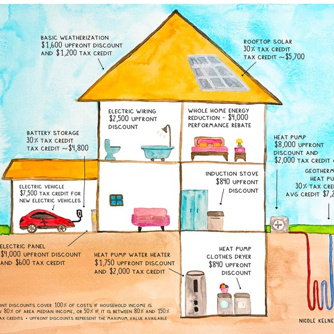
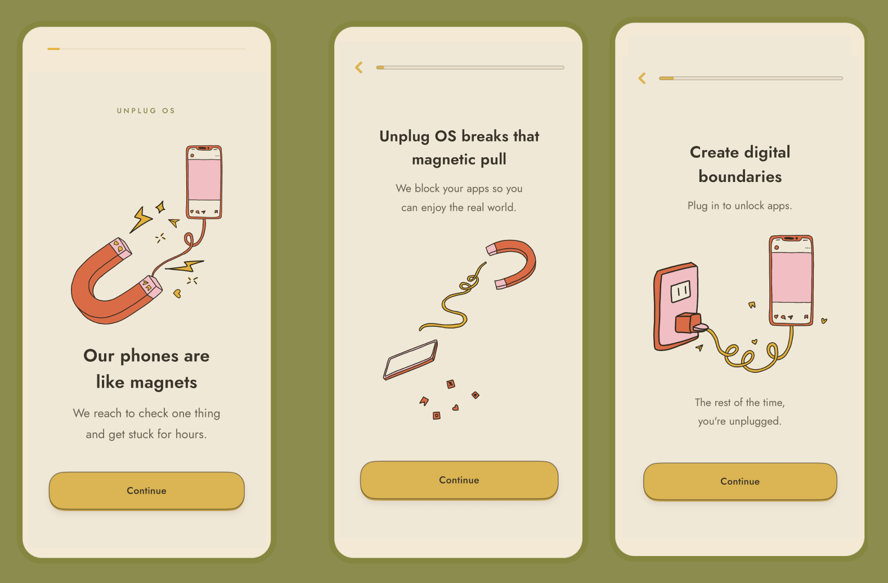
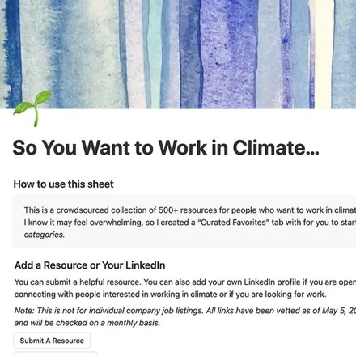
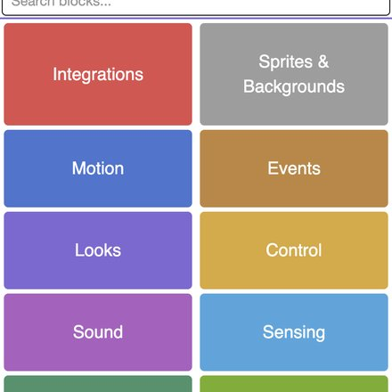

Nicole Kelner
Product Manager
Indie developer who has built 2 apps and instrumented them end-to-end in Mixpanel, running onboarding conversion experiments to find the flow that turns installs into paying users. Before that, nine years of product work as a cofounder, COO, and chief of staff, scaling new and existing products, including a K-12 education company I helped grow from one location to five nationwide, 1,000 students, and $1M in revenue before it was acquired.
Zero to One
From communicating the complex topics within the IRA to building apps, I am passionate about creating products that provide people with real value in their daily lives. I specialize in taking products from zero to one, working in ambiguous environments and bringing structure.





Past Work
- Founder and Product OwnerFree Time · Unplug OS
- Cofounder and COOThe Coding Space, then Head of Marketing
- Head of OperationsDashboard.Earth, a consumer climate app
- Founder and Product LeadSo You Want to Work in Climate
- CEO and FounderSmartPurse, acquired by Betabrand
Key metrics
- 250,000 impressionsMy illustrated guide to the Inflation Reduction Act, adopted by local governments as their explainer for residents.
- 61.6% trial to paidFree Time, all-time across 426 days tracked. Download to paid runs 6.8%, and 9.6% over the last 90 days.
- $1.6M budgetDashboard.Earth, where I was Head of Operations. Rockefeller Foundation funded, delivered on milestones.
- $1M in revenueThe Coding Space, the K-12 company I cofounded. One location to five, 1,000 students, then acquired.
- 55,000 followersArts and Climate Change, my studio. Grown from zero, reaching more than 3 million people.
Most minutes logged
- MixpanelInstrumented both apps end to end
- RevenueCatSubscription state, joined to activation in one dashboard
- Notion and TrelloBacklogs and delivery, from a 10-person cross-functional team to solo release management
- App Store ConnectLaunch, release management, per-channel acquisition
- Figma, Xcode & Claude CodeSpecs, and where the two apps actually got built
What I do most
- Hypothesis-driven deliveryState the bet, ship the smallest thing that tests it, read the result
- End-to-end product instrumentationFeature-level behavior analysis, funnel and retention analytics
- 0 to 1 iOS product ownershipApp Store launch and release management, beta programs
- Making technical systems legibleDistilling home electrification policy into a single visual, fact-checked with Rewiring America
- Prioritization and sequencingBacklogs, roadmapping, OKRs, specs and acceptance criteria